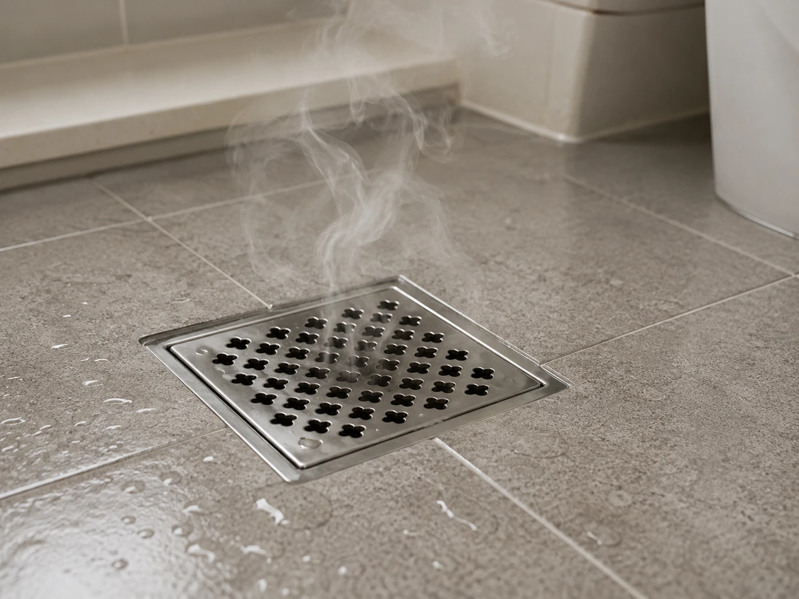
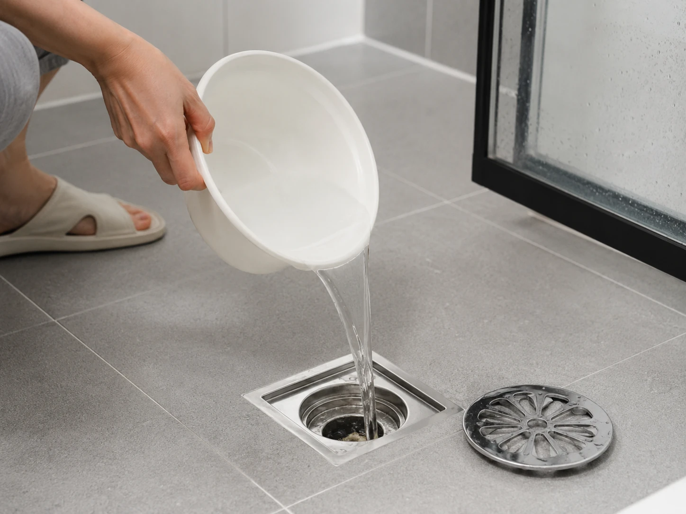
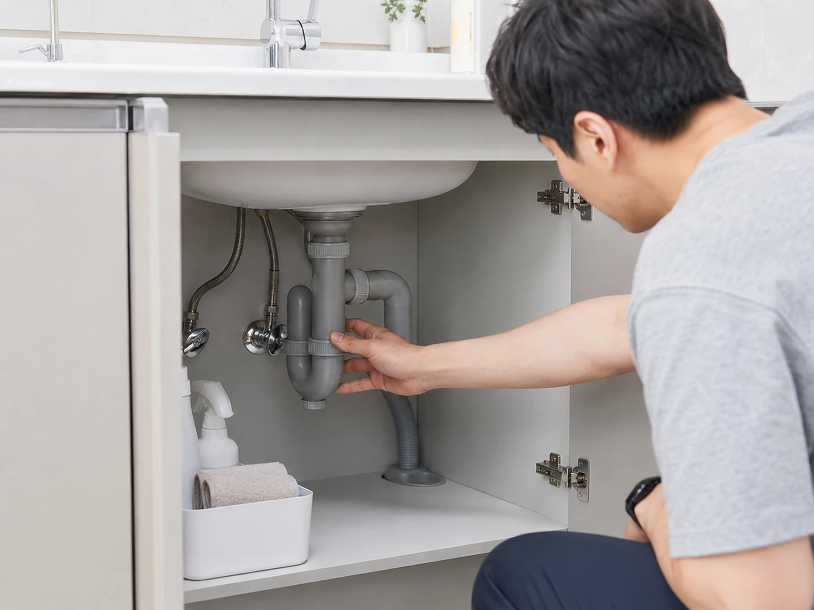
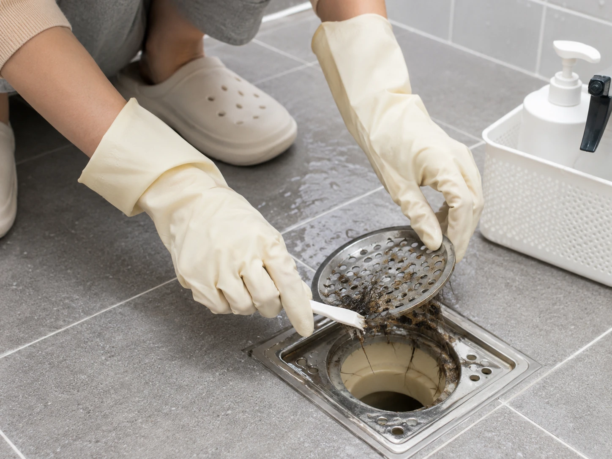
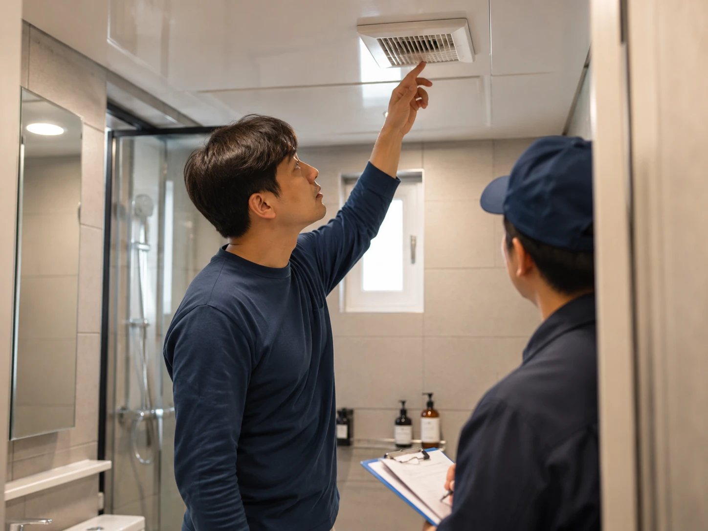

화장실 하수구 냄새, 청소 문제라고만 생각하면 놓치는 것이 있습니다
욕실 문을 열었는데 갑자기 퀴퀴한 하수구 냄새가 올라오는 날이 있습니다. 분명히 청소도 했고, 바닥도 닦았고, 방향제까지 뿌렸는데 냄새가 다시 올라오면 사람 마음이 은근히 상하죠.
온라인에서도 화장실 하수구 냄새 이야기는 계절마다 반복됩니다. 특히 비가 오기 전후나 습도가 높은 날에는 “우리 집만 이런가” 싶은 글들이 많이 올라오는데, 저는 이 냄새가 단순히 더러워서 나는 문제라고만 보기 어렵다고 생각합니다.
개인적으로 욕실 악취는 청소 실력 싸움이 아니라 구조, 물, 환기, 배수구 트랩이 같이 얽힌 문제에 가깝다고 봅니다. 그래서 오늘은 배수구 냄새 제거를 무작정 향으로 덮는 방식이 아니라, 원인부터 차근차근 보는 흐름으로 정리해보겠습니다.

청소를 안 해서 나는 냄새일까요, 아니면 집 구조가 보내는 신호일까요?
화장실 하수구 냄새가 나면 대부분 첫 반응은 “내가 청소를 덜 했나”입니다. 저도 예전에는 그랬습니다. 락스 냄새가 날 정도로 닦으면 해결될 줄 알았는데, 몇 시간 지나면 다시 올라오는 냄새를 보고 생각이 바뀌었습니다.
하수구 냄새 원인은 크게 세 가지로 나눠볼 수 있습니다. 첫째는 배수구 안쪽에 낀 머리카락, 비누 찌꺼기, 피지 같은 오염물입니다. 둘째는 물이 말라서 냄새 차단 역할을 해야 할 부분이 제 기능을 못 하는 경우입니다. 셋째는 트랩이나 배관 구조 자체가 약해서 냄새가 쉽게 역류하는 경우입니다.
여기서 의견이 갈립니다. 어떤 분은 “청소만 잘하면 냄새 안 난다”고 말하고, 또 어떤 분은 “아무리 청소해도 건물 배관 문제면 답 없다”고 말합니다. 저는 둘 다 반은 맞다고 봅니다. 청소로 잡히는 냄새가 있고, 청소만으로는 안 잡히는 냄새도 있습니다.
그래서 욕실 악취를 잡으려면 냄새가 나는 시간대를 보는 게 좋습니다. 샤워 직후인지, 외출 후인지, 비 오는 날인지, 환풍기를 켠 뒤인지에 따라 원인이 달라질 수 있습니다.

방향제부터 뿌리는 습관, 잠깐은 편하지만 냄새를 키울 수도 있습니다
방향제나 탈취제를 쓰면 순간적으로는 기분이 좋아집니다. 그런데 저는 하수구 냄새에는 방향제를 먼저 쓰는 습관이 오히려 문제를 늦게 발견하게 만든다고 봅니다. 냄새가 섞이면 더 이상 원인을 구분하기 어려워지기 때문입니다.
먼저 할 일은 배수구 커버를 열고, 눈에 보이는 머리카락과 찌꺼기를 제거하는 것입니다. 그다음 미지근한 물을 충분히 흘려보내고, 배수구 주변 고무패킹이나 트랩이 헐거워져 있지 않은지 확인합니다. 오래된 욕실은 이 작은 틈에서 냄새가 생각보다 많이 올라옵니다.
개인적으로 효과를 봤던 방식은 강한 세제를 매일 붓는 게 아니라, 배수구를 물리적으로 비우고 물을 주기적으로 채워주는 쪽이었습니다. 특히 거의 쓰지 않는 욕실이나 베란다 배수구는 물이 말라 냄새가 올라오는 경우가 있습니다.
또 하나 놓치기 쉬운 부분은 환기입니다. 습기가 오래 남으면 욕실 냄새가 더 눅눅하게 느껴집니다. 환풍기를 켜는 것만으로 부족하면 문을 열어 공기 흐름을 만들어주는 게 좋습니다. 저는 욕실 냄새가 심한 집일수록 향보다 공기 길을 먼저 봐야 한다고 생각합니다.

배수구 트랩 교체까지 해야 한다면, 이건 과한 걸까요?
여기서 또 댓글이 갈릴 수 있습니다. “그냥 청소하면 되지 뭘 교체까지 하냐”는 분도 있고, “냄새 올라오는 집은 트랩 바꾸는 게 답”이라는 분도 있습니다. 저는 냄새가 반복된다면 배수구 트랩 확인은 충분히 해볼 만하다고 봅니다.
트랩은 하수구 냄새가 실내로 올라오지 못하게 막는 역할을 합니다. 그런데 오래되었거나 규격이 맞지 않거나, 설치가 헐거우면 욕실 악취가 반복될 수 있습니다. 특히 원룸, 오래된 빌라, 반지하, 구축 아파트에서는 배관 냄새 이야기가 자주 나오는 편입니다.
다만 무조건 비싼 제품부터 살 필요는 없습니다. 먼저 배수구 형태를 확인하고, 물이 고이는 구조인지, 커버가 제대로 닫히는지, 사용하지 않는 배수구가 말라 있지는 않은지 보는 게 순서입니다. 저는 이런 기본 확인 없이 향이 강한 제품만 바꾸는 건 돈이 아깝다고 봅니다.

화장실 냄새 원인은 생각보다 자존심을 건드리는 문제입니다. 집을 깨끗하게 쓰는 사람도 하수구 냄새 때문에 괜히 민망해질 수 있으니까요. 하지만 냄새가 난다고 해서 무조건 청소를 못한 것은 아닙니다.
배수구 냄새 제거는 청소, 물 채우기, 트랩 확인, 환기 순서로 보면 훨씬 덜 막막합니다. 저는 여기서 핵심은 “냄새를 덮는 것”이 아니라 “냄새가 올라오는 길을 찾는 것”이라고 생각합니다.

여러분은 화장실 하수구 냄새가 나면 청소 문제라고 보시나요, 아니면 배수구 구조 문제라고 보시나요. 저는 냄새가 반복된다면 청소만 탓하지 말고 트랩과 물길까지 확인하는 쪽이 더 현실적이라고 봅니다.
관련 키워드: 화장실 하수구 냄새, 배수구 냄새 제거, 욕실 악취, 하수구 트랩, 화장실 냄새 원인, 욕실 냄새 제거